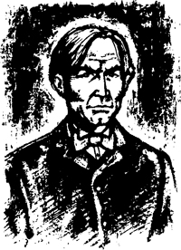
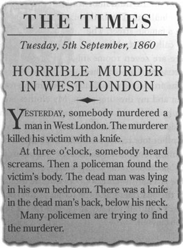
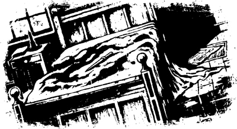
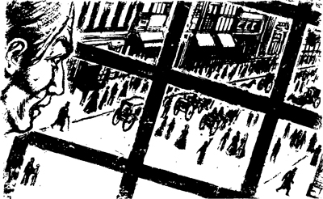
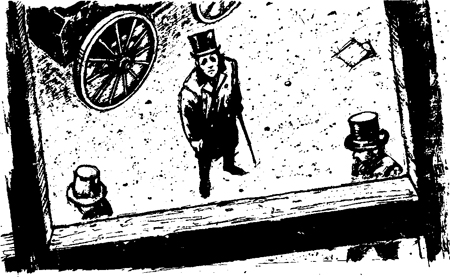

Listen to Part 1:

Tôi là George Fotherley. Tôi có một công việc quan trọng tại một ngân hàng nổi tiếng ở London. Tôi làm việc ở London và cũng sống ở đó luôn. Tôi đang ở trong một chung cư lớn tại tầng ba của một tòa nhà lớn. Tòa nhà đó nằm tại một con phố nổi tiếng. Con phố có tên là Quảng trường Piccadilly.
Có 7 phòng trong chung cư của tôi. Ba trong số chúng ở mặt tiền tòa nhà - phòng khách của tôi, phòng ngủ của tôi và phòng thay đồ của tôi. Quần áo của tôi nằm ở phòng thay đồ. Tôi có thể nhìn xuống Quảng trường Piccadilly qua cửa sổ của cả ba phòng này.
Bốn căn phòng còn lại ở mặt sau của tòa nhà - phòng ăn, nhà bếp, phòng tắm và phòng cho người hầu.
Có một hành lang hẹp giữa các phòng tại mặt trước và mặt sau của căn hộ.
Tôi sẽ kể về câu chuyện của mình. Nhưng trước hết, tôi xin kể cho bạn một số điều về bản thân mình.
Tôi là một người cô đơn. Tôi là một người đàn ông độc thân. Người hầu của tôi là John Derrick và vợ anh ta cùng sống với tôi. Họ chăm sóc cho tôi. Tôi không quen biết nhiều người. Nhưng tôi thấy nhiều người lắm. Thường thì tôi nhìn ra ngoài cửa sổ ở phòng khách. Luôn có những người trên đường phố bên ngoài căn hộ của tôi. Quảng trường Piccadilly là một con đường đông đúc. Tôi thường ngắm nhìn những người đi trên đường ở Quảng trường Piccadilly.
Một buổi sáng thứ Ba vào năm ngoái, tôi đang ở phòng khách. Đó là một buổi sáng đầy nắng vào đầu tháng 9. Tôi đang đọc báo. Trên trang nhất có một số tin tức về một vụ giết người kinh hoàng.

Trong mười phút, tôi ngồi đọc về vụ giết người. Rồi đột nhiên một chuyện lạ lùng xảy ra. Tôi ngẩng đầu nhìn. Trong khoảng một phút, tôi thấy mình ở trong một căn phòng khác. Tôi đang ở đâu thế này? Tôi lại không ở trong phòng khách. Tôi đang ở trong một căn phòng nhỏ tối tăm trong một ngôi nhà cũ kỹ. Tôi đã lạc vào phòng ngủ của nạn nhân rồi! Người đàn ông bị giết không có ở đó. Nhưng tôi trông thấy giường ông ta. Và tôi thấy dính máu trên giường của ông ta! Tôi thấy một con dao nằm trên giường của ông ta! Tôi nhắm mắt lại. Tôi thở dốc. Rồi tôi mở mắt ra và thấy mình lại đang ở trong phòng khách.
Listen to Part 2:

Tôi tự nhủ: "Có chuyện gì đang xảy ra với mình thế này?". Tôi vội đứng bật dậy khỏi ghế và bước tới cửa sổ. Tôi nhìn xuống đường phố.
Sáng hôm đó, Quảng trường Piccadilly rất đông đúc. Nhiều người đang đi lại trên phố. Một số người đang trò chuyện với nhau. Một số người đang xem những cửa tiệm trưng bày. Có ba người đàn ông cùng đi trên phố. Họ nhìn thấy một người bạn bên kia đường. Họ không dừng lại để chào nhau mà cứ vừa đi vừa kêu "Chào buổi sáng!" với nhau. Chẳng mấy chốc, họ biến mất.
Rồi đột ngột, xảy ra một hiện tượng lạ lùng nữa. Tôi thấy hai người đàn ông đi rất nhanh dọc theo con phố Quảng trường Piccadilly. Người đàn ông đầu tiên đi trước người thứ hai khoảng 100 feet.
Tôi nhìn hai người đàn ông đó trong vòng nửa phút. Họ luôn cách nhau chừng 100 feet. Họ không dừng chân. Họ không ngó vào bất kỳ cửa tiệm nào cả. Họ cũng chẳng nhìn những người khác trên đường.
Tôi tự nhủ "Người đàn ông kia đang theo người đứng đầu tiên. Nhưng tại sao anh ta lại làm thế?".

Gương mặt người đàn ông đi đầu hằn rõ vẻ khổ sở. Thỉnh thoảng ông ta lại ngoái đầu lại. Ông ta nhìn lại người đàn ông thứ hai. Đoạn ông ta bước đi nhanh hơn. Nhưng người đàn ông thứ hai cũng bước nhanh theo.
Tôi nghĩ thầm: "Ông ta trông rất hoảng sợ. Có chuyện gì khiến cho ông ta hoảng sợ thế này?".
Gương mặt người đàn ông thứ hai tái đi. Anh ta nhìn chằm chằm về phía trước mặt - anh ta nhìn ngay về phía trước.
Listen to Part 3:
Tôi thắc mắc: "Có phải người đàn ông kia đang mộng du không nhỉ? Không! Không phải anh ta đang ngủ. Bây giờ đã là giữa trưa rồi!".
Hai người đàn ông đó không để ý gì đến những người khác trên phố. Họ cứ đi thẳng về phía trước thật nhanh. Nhưng họ không đâm vào bất kỳ người nào khác cả. Còn những người khác trên phố lại chẳng nhìn thấy họ. Phải chăng họ không thấy hai con người kỳ lạ đó?
Chẳng mấy chốc, người đàn ông đứng đầu đã đi đối diện với cửa sổ nhà tôi. Ông ta ngẩng lên nhìn và chiếu thẳng vào mắt tôi. Trông mặt ông thật khủng khiếp! Ông ngừng bước lại trong một giây. Rồi, ông lại hối hả chạy đi.
Tôi thầm nghĩ: "Ừ, ông ta rất sợ thật. Tôi sẽ gọi tên người đó là Người đàn ông sợ sệt!".
Mấy phút sau, người đàn ông kia đã ở đối diện với cửa sổ nhà tôi. Anh ta cũng nhìn lên tôi.
Người đàn ông kia dừng lại trong ít phút. Anh ta đứng im lặng và nhìn tôi.

Tôi tự nhủ: "Khuôn mặt anh này tái nhợt quá. Đó đúng là khuôn mặt của một người đang hấp hối rồi!".
Tôi nghĩ tiếp: "Cái người đầu là Người đàn ông sợ sệt. Thì cái người này chính là Người đàn ông nhợt nhạt. Người đàn ông nhợt nhạt này đang muốn nói rằng "Hãy nhớ tới tôi! Hãy giúp tôi!"
Tại sao tôi lại nghĩ như vậy? Tôi không biết.
Listen to Part 4:
Rồi Người đàn ông nhợt nhạt tiếp tục đi. Chẳng mấy chốc, cả hai người kia đã đi qua cửa sổ nhà tôi. Họ không quay lại nữa.
Vài phút sau, John Derrick bước vào phòng.
Anh ta nói: "Cơm của ông đã được dọn vào phòng ăn rồi ạ".
———
Ba ngày sau, một số cảnh sát đã bắt giữ một người đàn ông. Họ bắt ông ta vì tội giết người. Họ đưa ông ta đến một đồn cảnh sát. Họ buộc tội ông ta đã giết một người đàn ông ở Tây London. Tôi đọc được thông tin đó trên báo.
Chẳng mấy chốc, tôi cũng quên đi vụ án mạng đó. Nhưng tôi vẫn không quên hai gã đàn ông đó trên phố. Tôi vẫn nhớ rõ khuôn mặt kỳ lạ của họ. Tôi còn nhớ gương mặt khổ sở của Người đàn ông sợ sệt. Tôi vẫn nhớ ánh mắt chăm chăm của Người đàn ông nhợt nhạt.
Tôi vô cùng ngạc nhiên khi hai tháng sau, tôi lại nhìn thấy những người đàn ông này!